暮らしと、ちょっといいもの。
実際のレビューをもとに、暮らしを少し良くするアイテムと知恵をお届けします。
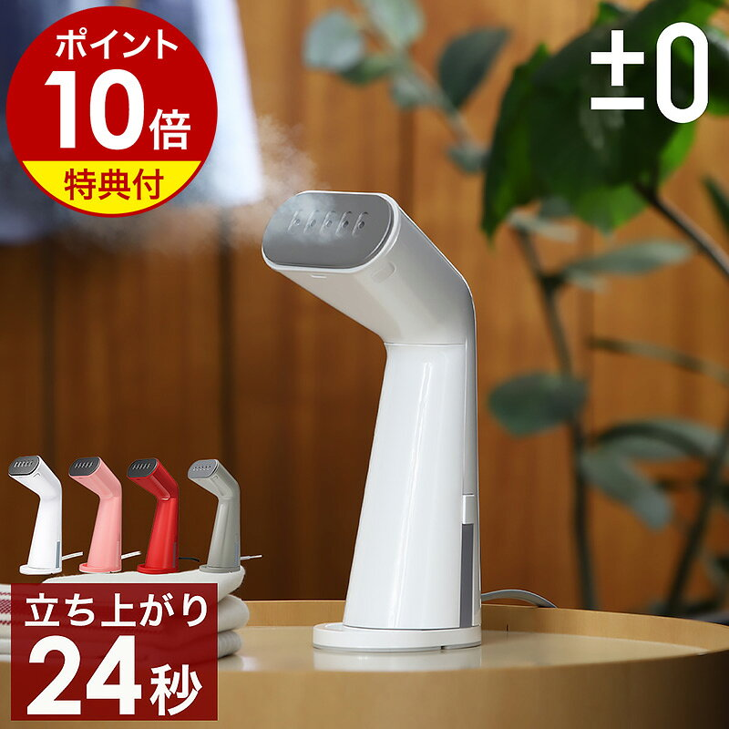
衣類スチーマーおすすめ3選と選び方比較ガイド
衣類スチーマーのおすすめ3選を、立ち上がりの速さ・スチーム機能・携帯性といった選び方のポイントで比較しました。レビュー評価や特徴をもとに、自分に合ったタイプを選ぶための参考情報をまとめています。
2026-11-11
-
 メンズファッション
メンズファッション
革靴・スニーカーの保管とローテーションで長持ちさせる方法
革靴・スニーカーを長持ちさせるには、日々のブラッシングだけでなく「休ませ方」や保管環境も大切です。シューキーパーや除湿剤の使い方、ローテーションのコツを紹介します。
2026-11-11
-
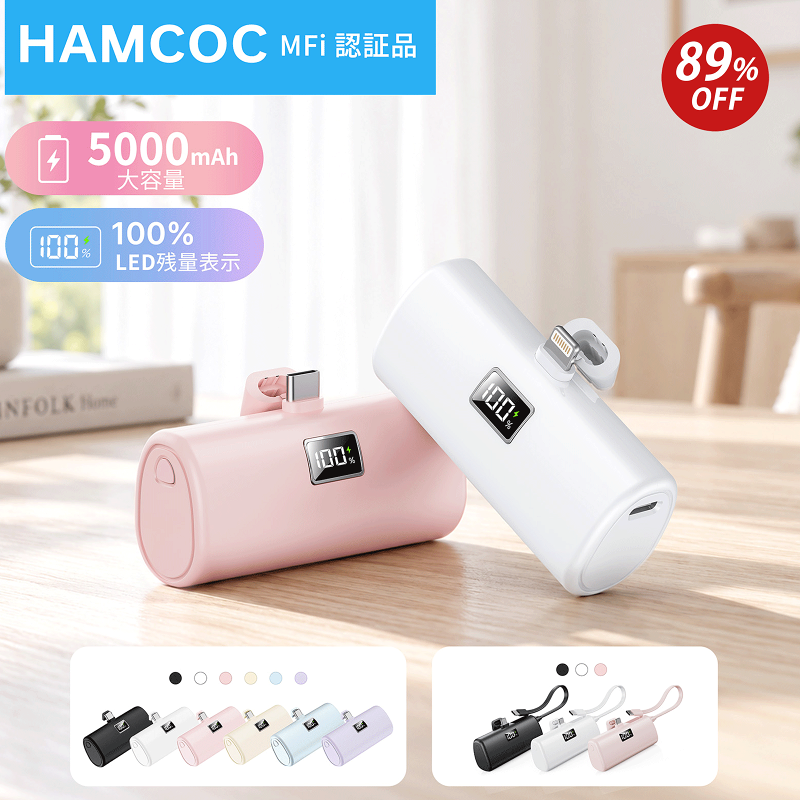
ガジェット ・ PRモバイルバッテリーおすすめ3選と選び方を比較
モバイルバッテリーのおすすめ3選を、容量・対応コネクタ・携帯性の違いから比較。iPhone/Android対応モデルやケーブル内蔵タイプなど、自分に合った1台を選ぶ参考にしてください。
2026-11-10
-
生活雑貨
防災グッズの選び方と保管場所の工夫｜分散備蓄のコツ
防災グッズは何をどれだけ備え、どこに置くかで安心感が変わります。内閣府が示す備蓄量の目安や、分散保管・ローリングストックの考え方を分かりやすく紹介します。
2026-11-10
-
キッチン
一人暮らしの自炊を時短にする調味料と調理器具の収納術
一人暮らしのキッチンで自炊を時短にするための収納の工夫を紹介します。調味料の置き場所、調理器具の立てる収納、動線を意識した配置など、狭いキッチンでも実践しやすいポイントをまとめました。
2026-11-09
-
Huawei・中華ガジェット
格安タブレットは何ができる?できないことも解説
1万円台から買える格安タブレットで実際にできること・できないことを、動画視聴やゲーム、Huawei系端末特有の注意点まで含めて整理しました。購入前のチェックポイントもまとめています。
2026-11-09
-
 Apple最新情報
Apple最新情報
iPadを仕事・勉強で使いこなす設定とアクセサリー選び
iPadOS 26のステージマネージャやApple Intelligenceの活用設定と、仕事・勉強に役立つキーボード・Apple Pencilなどアクセサリーの選び方をまとめました。
2026-11-08
-
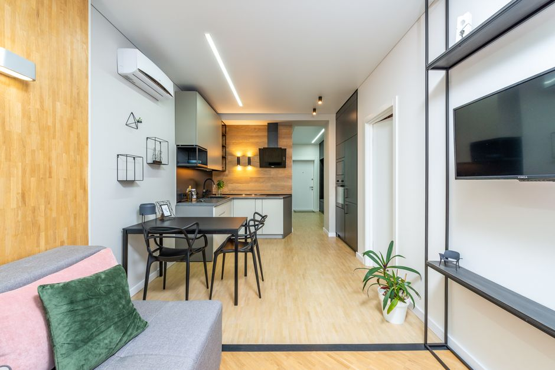
便利家電・最新家電電気圧力鍋・自動調理鍋でできることとできないこと
電気圧力鍋や自動調理鍋は時短・ほったらかし調理に便利ですが、かき混ぜや揚げ物、お手入れの手間など苦手な部分もあります。できることとできないことを整理して紹介します。
2026-11-08
-
 メンズファッション ・ PR
メンズファッション ・ PR
裏起毛パンツおすすめ3選|レビューで比較する選び方
裏起毛パンツを探している方向けに、ストレッチ性・シルエット・レビュー評価が異なる3タイプを比較。価格帯やウエスト仕様の違いも紹介し、自分の履き方に合う一着を選ぶ手がかりをまとめました。
2026-11-07
-
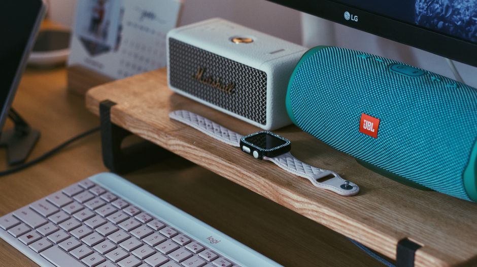
ガジェットモバイルバッテリーの選び方とPSE規格、長持ちする使い方
モバイルバッテリーは容量・PSE規格の確認が安全選びの基本です。正しい保管方法や2026年4月から変わった飛行機への持ち込みルールまで、根拠に基づいて分かりやすく解説します。
2026-11-07
-
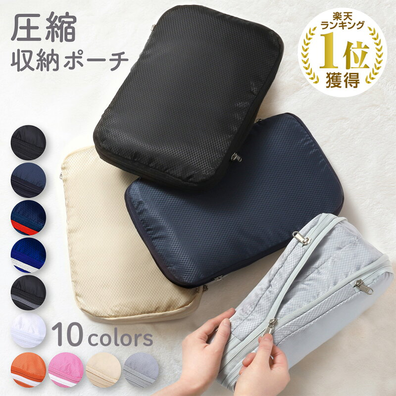
生活雑貨 ・ PR生活雑貨のおすすめアイテム比較 圧縮袋・耳かき・パスポート
旅行用圧縮ポーチ、LEDライト付き耳かき、パスポートカバーの3点を実際のレビュー評価や商品説明から比較し、それぞれの特徴や使い方の違いをご紹介します。
2026-11-06
-
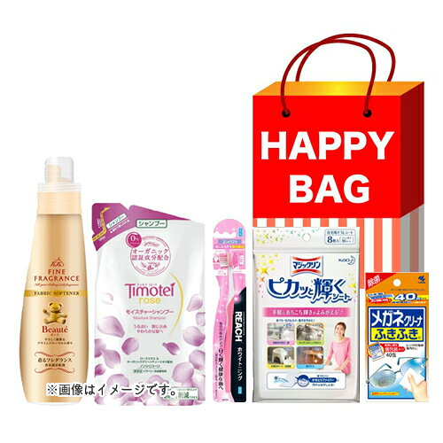
キッチン ・ PRキッチン雑貨おすすめ比較｜福袋・トング・ボトルスタンド3選
キッチンで役立つ日用品福袋・ゆびさきトング・ボトルスタンドの3点を、価格やレビュー評価、商品説明に基づいて比較紹介します。
2026-11-06
-
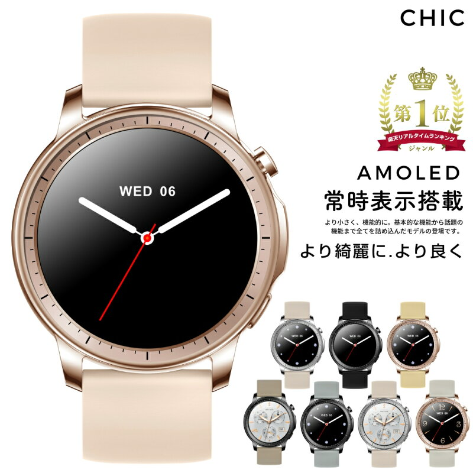
Huawei・中華ガジェット ・ PRレディース向けスマートウォッチ3選、画面と機能で比較
楽天で人気のレディース向けスマートウォッチ3モデルを、画面サイズ・防水性能・搭載機能・価格帯の違いという観点から比較紹介します。
2026-11-05
-
 Apple最新情報
Apple最新情報
iCloud無料5GBでiPhone写真を管理する整理術
iCloudの無料容量5GBがいっぱいになりやすい理由と、お金をかけずに写真・バックアップを整理して空き容量を確保する具体的な手順を紹介します。
2026-11-05
-
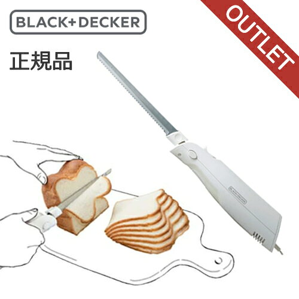
便利家電・最新家電 ・ PR電動ナイフとオールパンゼロで選ぶ便利家電比較
パン切り用の電動ナイフと、人気フライパン「オールパンゼロ」のカラー違い2点を、価格やレビュー評価などの実データをもとに比較紹介します。
2026-11-04
-
 メンズファッション ・ PR
メンズファッション ・ PR
メンズTシャツ&ニットカーディガン比較|秋のおすすめ3選
ストレッチ素材の5分袖・7分袖Tシャツと、存在感のあるケーブルニットカーディガンを実際のレビュー評価とともに比較。秋口のコーデ選びに役立つ3点をご紹介します。
2026-11-04
-
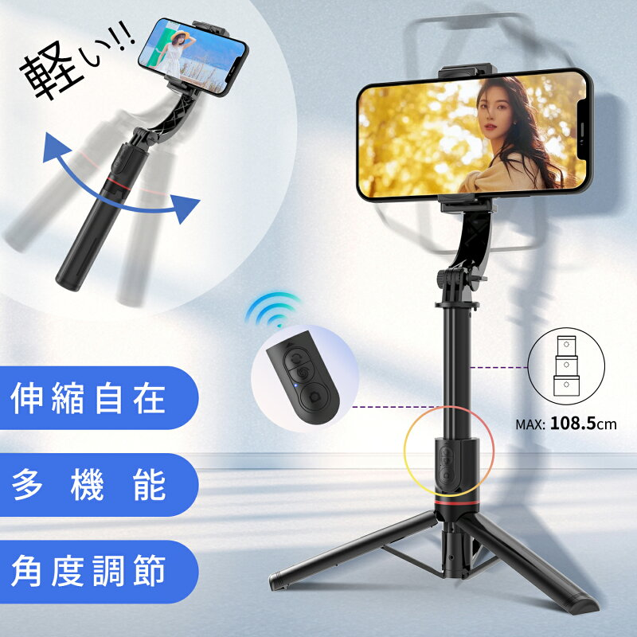
ガジェット ・ PR自撮り棒ジンバルとハンドストラップ比較3選
スマホ用の自撮り棒ジンバルと、人気のハンドストラップ2種を価格・レビュー評価で比較しました。撮影の安定感重視か、落下防止とデザイン重視かで選び方が変わります。
2026-11-03
-
 生活雑貨
生活雑貨
ゴミ出し・ゴミ袋収納をすっきりさせる整理のコツ
ゴミ袋がかさばって散らかりやすい方へ。サイズ分けや吊るす・立てる収納、分別ゴミ箱の置き方など、キッチンの隙間を活かしてすっきり整える工夫を紹介します。
2026-11-03
-
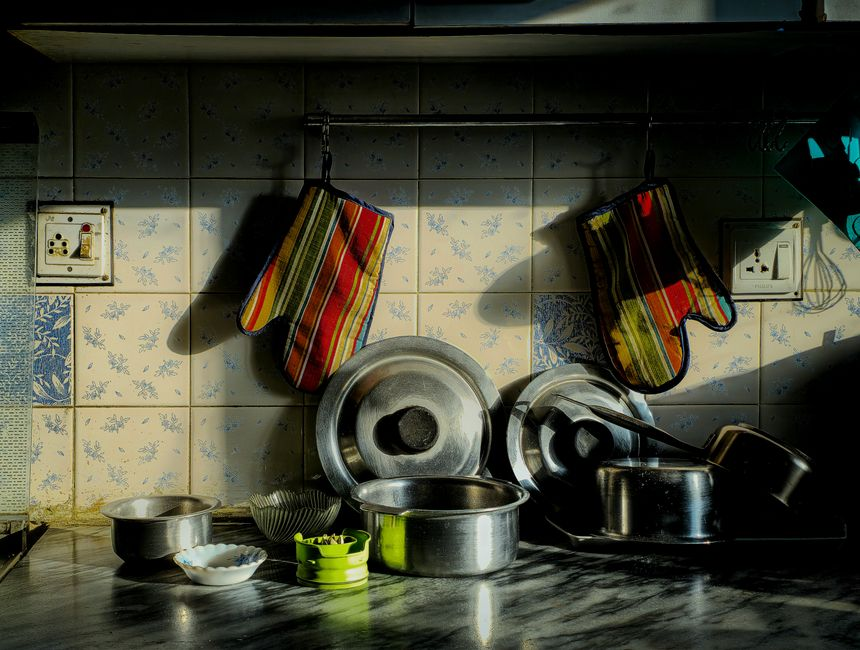
キッチン木製・鉄・フッ素別まな板とフライパンの手入れ方法
まな板とフライパンの手入れ方法を素材別に紹介。木製・プラスチック製まな板の洗い方や、フッ素コーティング・鉄フライパンの油ならし・焦げ付き対処法まで、素材の違いに注目して解説します。
2026-11-02
-
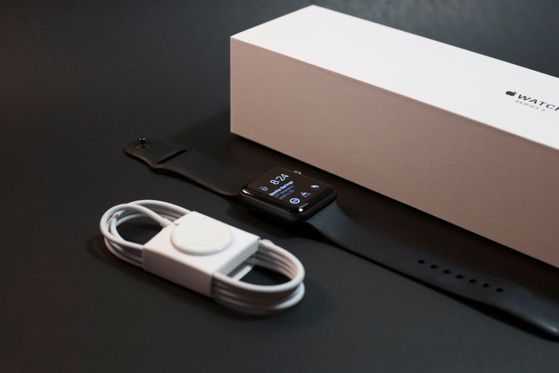
Huawei・中華ガジェット海外通販と国内正規品、中華ガジェットの買い方の判断基準
中華ガジェットを海外通販サイトで買うか、国内の正規品・代理店経由で買うか迷う方向けに、技適マークや保証、偽物リスクなど判断のポイントを整理しました。
2026-11-02
-
 Apple最新情報
Apple最新情報
AirPodsの最新ノイズキャンセリング機能と設定方法まとめ
2026年のAirPods 5やAirPods Proに搭載された最新のノイズキャンセリング機能と、コントロールセンターや設定アプリでの切り替え方法をわかりやすく紹介します。
2026-11-01
-
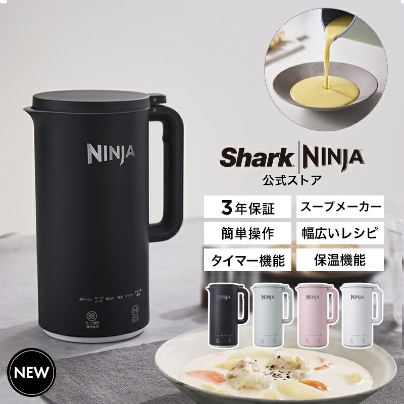
便利家電・最新家電 ・ PRスープメーカー・ヘアアイロン・フライパン徹底比較
便利家電・最新家電ジャンルから、オートスープメーカー、多機能ヘアアイロン、IH対応フライパンの3点を、価格とレビュー評価を基準に実データだけで比較紹介します。
2026-11-01
-
 メンズファッション ・ PR
メンズファッション ・ PR
メンズファッション比較|防寒インナー&ポロ&ロングT
防寒インナー、ドット柄ポロシャツ、ロングTシャツの3点を価格とレビュー評価から比較。季節や用途で選び方が変わるメンズアイテムの特徴を分かりやすく紹介します。
2026-10-31
-
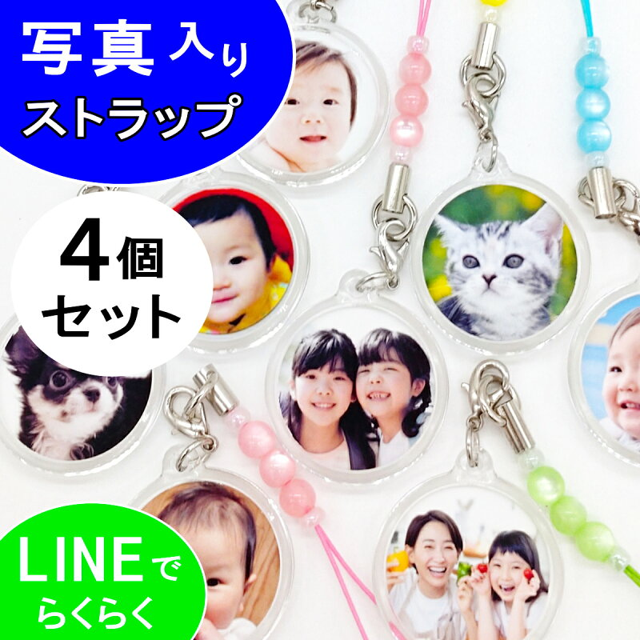
ガジェット ・ PRスマホ便利ガジェット3選 冷却ファン・ジンバル・ストラップ比較
ガジェット好きに注目されやすい写真入りストラップ、スマホ冷却ファン、ジンバルスタビライザーの3点を、価格やレビュー評価などの商品情報をもとに比較・紹介します。
2026-10-31
-
 生活雑貨 ・ PR
生活雑貨 ・ PR
生活雑貨のおすすめアイテム比較 整理ポーチと収納ケース3選
生活雑貨のおすすめアイテム比較として、旅行や普段使いに便利なケース・ポーチ3点のレビュー評価や特徴を楽天市場の商品データをもとに紹介します。ナイロン製ケース、YKKファスナー採用ポーチ、6点セットのトラベルポーチをまとめました。
2026-10-30
-
キッチン
一人暮らしの食費を抑える買い物の工夫と冷凍保存のコツ
一人暮らしの食費の平均額を踏まえ、週1回のまとめ買いやリスト化、冷蔵庫の在庫メモ、肉・魚・ご飯の冷凍保存期間の目安など、無理なく続けやすい買い物・保存の工夫を紹介します。
2026-10-30
-
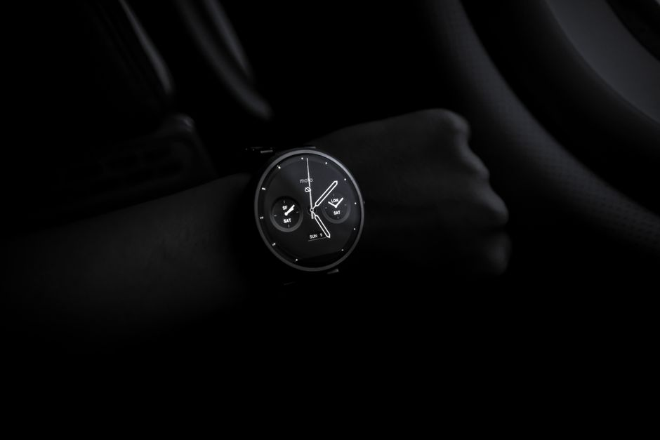
Huawei・中華ガジェットスマートリング活動量計の測定精度と使いどころを検証
スマートリングや活動量計の心拍・睡眠計測はどこまで正確なのか、海外の研究データをもとに精度の実態と、腕時計型との違い・向いている使い方を解説します。
2026-10-29
-
 Apple最新情報 ・ PR
Apple最新情報 ・ PR
iPhone周辺の車載ホルダー＆チャーム比較3選
iPhoneを車で使う方や、バッグ・イヤホンジャックを飾りたい方向けに、マグネット式車載ホルダー・バッグチャーム・イヤホンジャックアクセサリーの3点を価格とレビューの実データで比較紹介します。
2026-10-29
-
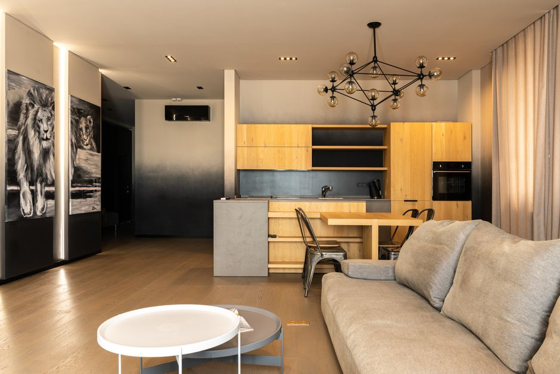
便利家電・最新家電衣類乾燥除湿機とドラム式洗濯乾燥機、用途で選ぶ使い分け方
衣類乾燥除湿機とドラム式洗濯乾燥機は仕組みも得意なことも異なります。設置のしやすさ・電気代・乾燥方式の違いを整理し、どちらが自分の暮らしに合うか考えるヒントを紹介します。
2026-10-28
-
メンズファッション
型崩れ・シワを防ぐメンズ服の素材選びと収納のコツ
シワになりにくい服の素材の特徴と、クローゼットや旅行時の収納方法について、素材の性質や収納の工夫をもとに分かりやすく解説します。
2026-10-28